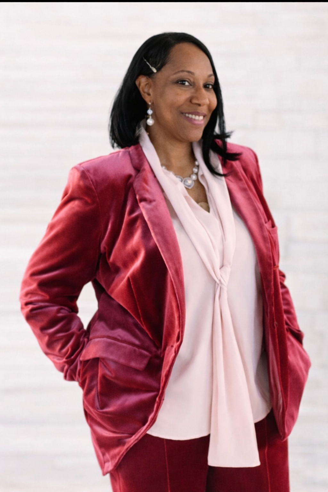

Founder of the Focused • Clear • Ready™ Method.
Allegra Bey is the founder of the Focused • Clear • Ready™ Method — a framework designed to help women lead from regulated energy, clarity, and strategic awareness.

Allegra Bey is the founder of the Focused • Clear • Ready™ Method — a framework designed to help women lead from regulated energy, clarity, and strategic awareness.
With a Master of Education and a Bachelor of Science in Professional Services, Allegra has worked for over 30 years as an educator and consultant in personal and professional development. As a wife, mother, grandmother, and retired professional, she brings both wisdom and lived experience to her work. Her mission is simple: to help women rise with greater ease, clarity, and self-trust, without having to learn everything the hard way.
At the heart of Allegra’s work is a simple but powerful belief:
True leadership begins within.
When women learn to regulate their energy, trust their inner clarity, and move strategically instead of reactively, they unlock a different kind of success — one rooted in confidence, alignment, and sustainable growth.
The Focused • Clear • Ready™ Method was created to support this shift.
Through this approach, Allegra helps women:
The result is leadership that feels intentional, steady, and deeply authentic.
Allegra has worked for more than 30 years in education, consulting, and personal and professional development, helping people recognize their strengths, expand their perspective, and move forward with greater purpose.
As a wife, mother, grandmother, and retired professional, she reached a moment in life where she realized something important: she was not finished with her purpose.
Instead of slowing down, she chose to channel decades of experience, insight, and lived wisdom into creating work that could help other women rise with greater ease and clarity.
Focused • Clear • Ready™ was born from both my professional background and my personal life experience.
Like many people, my life has included obstacles, losses, pain, and limitations. Yet through it all, I discovered something powerful: joy and peace are not reserved for perfect circumstances.
One day I found myself sitting on the couch singing a little song I had made up:
“I love my life.”
My granddaughter asked what I was singing, and when I told her, she smiled and said:
“I love mine too.”
We began singing together.
Later, as I reflected on that moment, I thought deeply about how many people are waiting to experience joy, clarity, or peace only after something in their life changes.
After the promotion.
After the relationship.
After the breakthrough.
But life is happening now.
I also saw so many women around me who were intelligent, capable, loving, and deeply talented — yet still felt blocked from the fulfillment they desired.
Some were overwhelmed.
Some were discouraged.
Some had simply lost connection with their own clarity.
What about the women who are ready?
The women who want more peace, more clarity, more alignment — now.
That is why I created Focused • Clear • Ready™.
It is my way of sharing the lessons, insights, and wisdom I have gathered through education, experience, and life itself.
Because life is movement. We are all moving. But when we move with focus, clarity, and readiness, we elevate.
My work is for women who know they are capable of more — but sense that something is holding them back from experiencing the clarity, confidence, peace, and joy they desire.
Women who are ready to move beyond overwhelm and confusion, reconnect with their inner strength and wisdom, build a life or business that feels aligned and meaningful, and experience greater joy and fulfillment now — not someday.
Together we uncover what has been standing in the way and create a path forward that is both practical and deeply empowering.
At this stage of my life, I am not trying to prove anything.
I simply want to use what I have learned to help other women move forward with more ease, clarity, and self-trust.
If you feel that quiet sense inside you that says there is more for your life, you may already be closer than you think.
You may simply need to become:
Focused • Clear • Ready™